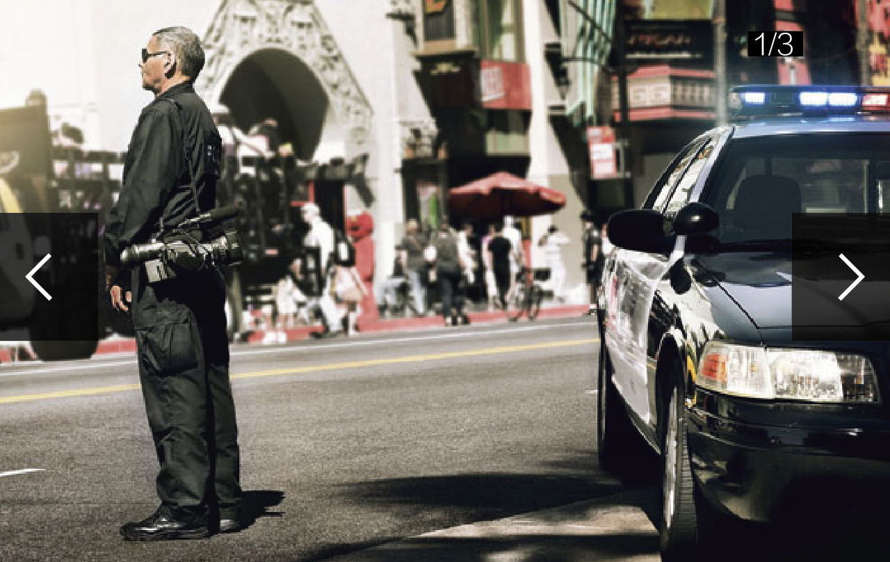
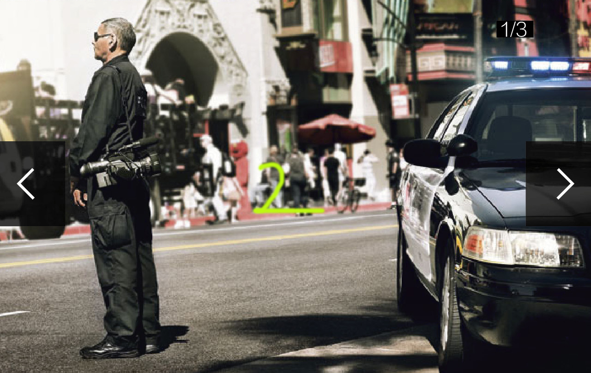
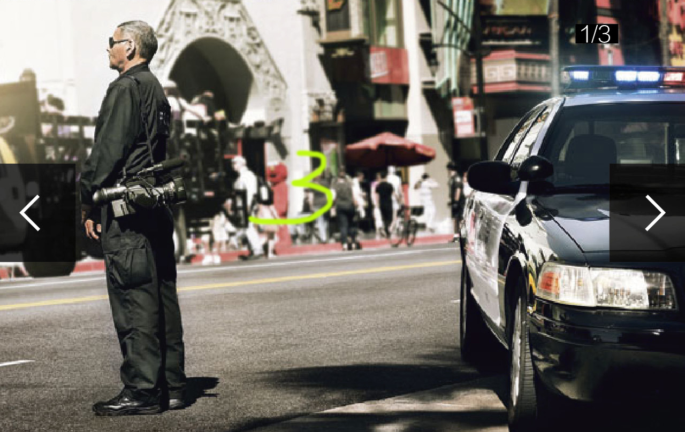
>> 视频
>> HOT NEWS
>> 新境界
>> 壁纸
>> 侃车手册
>> 品牌
>> 活动
HOT NEWS
阿斯顿。马丁发布
V12 Vantage
继去年发布继去年发布继去年发布继去年发布继去年发布继去年发布继去年发布继去年发布继去年发布继去年发布继去年发布继去年发布继去年发布了
2222继去年发布继去年发布继去年发布继去年发布继去年发布继去年发布继去年发布继去年发布继去年发布继去年发布继去年发布继去年发布继去年发布了
2014_7_29 | 李翔
视频
炫富
最高境界
不是烧钱，
而是烧胎而是
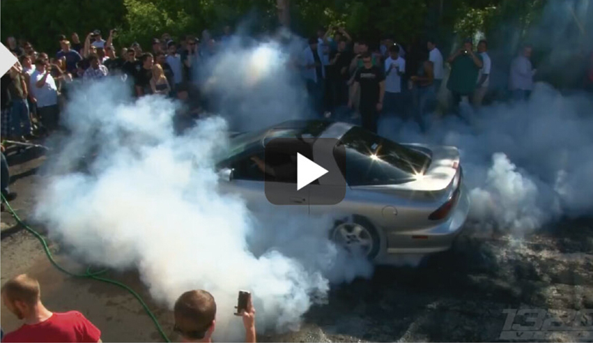
一个响亮的声音穿云裂石，直冲霄汉一个响亮的声音穿云裂石，直冲霄汉一个响亮的声音穿云裂石，直冲霄汉一个响亮的声音穿云裂石，直冲霄汉一个响亮的声音穿云裂石，直冲霄汉一个响亮的声音穿云裂石，直冲霄汉一个响亮的声音穿云裂石，直冲霄汉一个响亮的声音穿云裂石，直冲霄汉一个响亮的声音穿云裂石，直冲霄汉。
2014_7_29 | 李翔
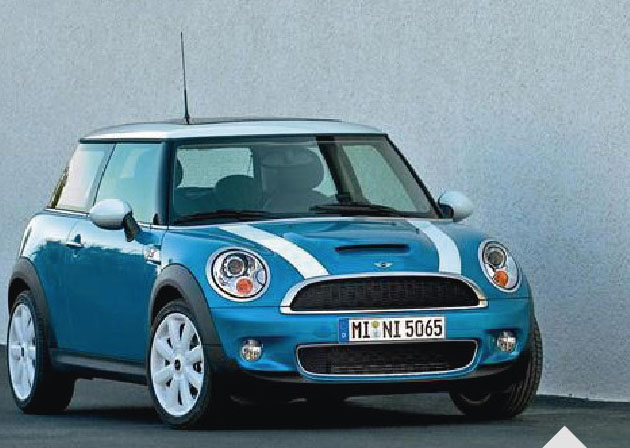
侃车手册
详解汽车的11种驱动方式
[2014年7月18日，北京]受关注的备受关注的备注的备受关注的备受关注的备注的备受关注的备受关注的备受关注的备受关注受关注的备受关注的。
2014_7_29 | 李翔
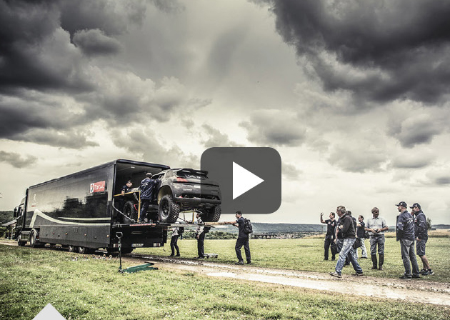
视频
重返达喀尔
标志2008DKR
荒野狂飙
我们聊车的时候，驱动方式是一个很微妙的话题我们聊的时候驱动方式方式是一个很是一个很微妙个很微妙的话题。
2014_7_29 | 李翔
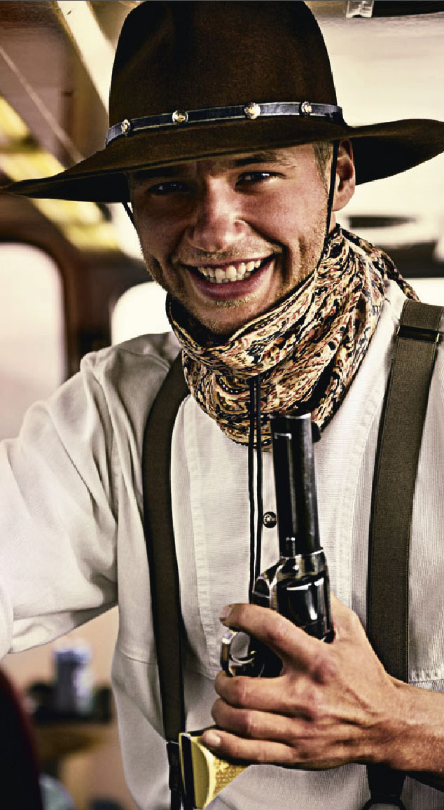
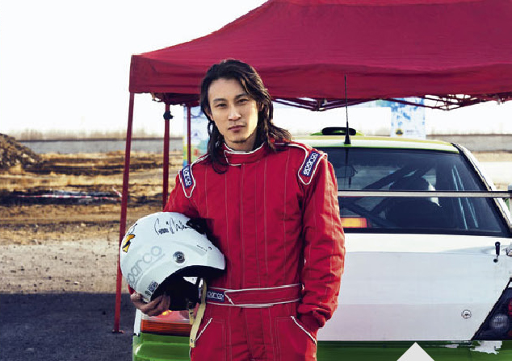
新境界
人物摄影的窍门儿
实用技巧运用解析
四分之三侧面拍摄：最易用的角度最易用的角度最易用的角度最易易用的角度最易用的角度最易易用的角度最易用的角度最易用的角度最易用的角度最易易用的角度最易用的角度最易用的角度。
2014_7_29 | 李翔
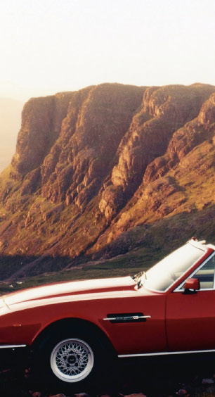
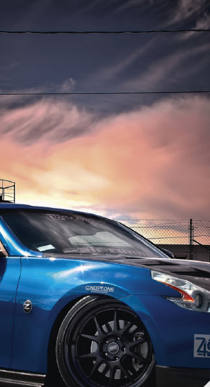
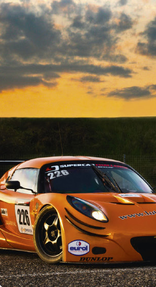
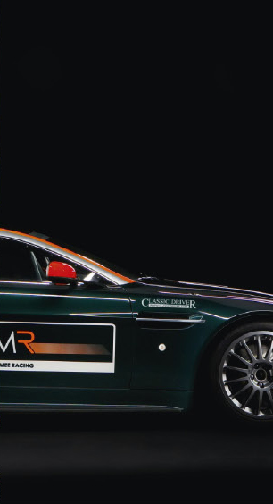
壁纸